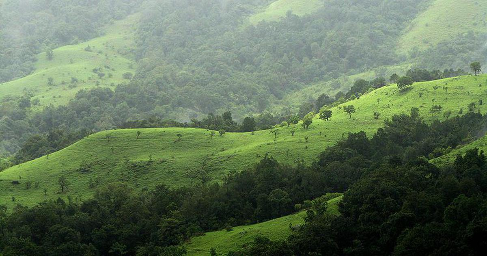

Explore Tamil Nadu's Rich Heritage – Welcome, Traveler!
Enable Location
Explore Heritage Sites
Brihadeeswarar Temple
Airavatesvara Temple
Mahabalipuram
Gangaikonda Cholapuram
Nilgiri Mountain Railway

Western Ghats
Meenakshi Amman Temple
Ramanathaswamy Temple
SOS Alert
Discover Nearby Heritage Gems
View Now